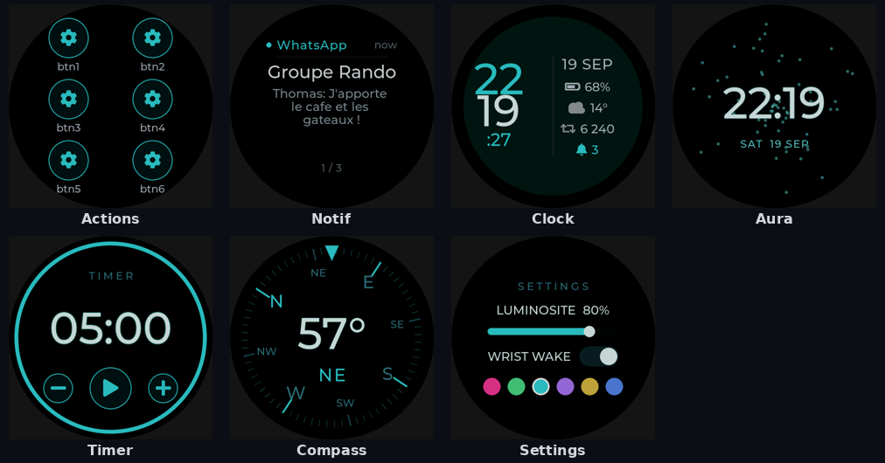
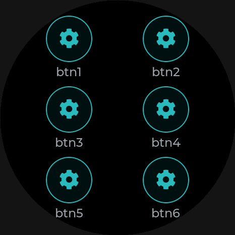

⤬
Swipeable faces
Faces and apps live in an lv_tileview — swipe horizontally between
them, swipe vertically to flip Clock ⇄ Aura and Apps ⇄ Level.
Open-source smartwatch · LVGL · ESP32-S3
JNKWatch is a round smartwatch built in the open — a platform-independent LVGL v9 interface that runs on a desktop emulator and on a 466×466 AMOLED ESP32-S3, paired with an Android companion app.
Apache-2.0 · Firmware v1.3 · emulator, on-device firmware & Android companion
Live preview · real renders below
Features
A swipeable deck of faces and apps, a motion-reactive aura, and a fully customizable action grid that talks to your phone over BLE.
Faces and apps live in an lv_tileview — swipe horizontally between
them, swipe vertically to flip Clock ⇄ Aura and Apps ⇄ Level.
A Casio-style face: a big LCD time next to a status column with date, battery, weather, activity and an unread-notification bell.
A particle watchface driven by the IMU — calm cyan at rest, vivid magenta the moment you move.
Six customizable buttons. Each tap fires a BLE event your phone turns into an HTTP POST webhook — control anything.
Phone notifications, SMS and calls forwarded to a card on the watch, with an unread bell and tap-to-dismiss.
Recolor the whole UI in a tap — Rose, Vert, Cyan, Violet, Or or Bleu.

The deck
Hardware
An off-the-shelf round dev board — no custom PCB required to start hacking. Every driver and pinout is documented in the repo.

Android companion
A Kotlin / Jetpack Compose app connects over BLE and feeds the watch everything it needs — built around a documented GATT protocol.
Forwards app notifications, SMS and incoming calls straight to the watch.
Pulls local conditions from Open-Meteo and syncs temp & condition.
Maps each of the six action buttons to a configurable HTTP POST with your own body & headers.
Polls GET endpoints on a schedule and pushes the values to the watch’s Probes face.
Keeps the RTC and your preferences mirrored between phone and watch.
Every characteristic is specified in docs/ble-protocol.md — build your own client.
Under the hood
The entire watchface is plain LVGL with a thin driver layer. The same UI source compiles for the PC emulator and for the device — only the HAL changes. Build it, screenshot it, and unit-test it before any hardware is on your desk.
Firmware + shared UI live in firmware-esp32/, the companion app in
android-app/, both in one repo.
watch_sim opens an SDL2 window; a headless target emits PNGs (the images
on this page). Core logic lives in pure, LVGL-free C modules.
16 Unity test suites cover the logic modules — pedometer, steps, timer, settings,
notifications, probes, level math and more — run via ./test.sh.
Screen-off standby, esp_pm light-sleep, low-power BLE and an ultra-low
“watch-only” mode that keeps the clock alive with the radio off.
Quick start
No hardware needed to try the UI — the emulator builds on any desktop. Flashing a device uses ESP-IDF 5.3+.
# 1 · get the source
git clone --recursive https://github.com/linquant/jnkwatch
cd jnkwatch/firmware-esp32
# 2 · build & run the emulator
./build.sh
./build/watch_sim
# 3 · flash a device (ESP-IDF 5.3+)
idf.py -C firmware flash monitor